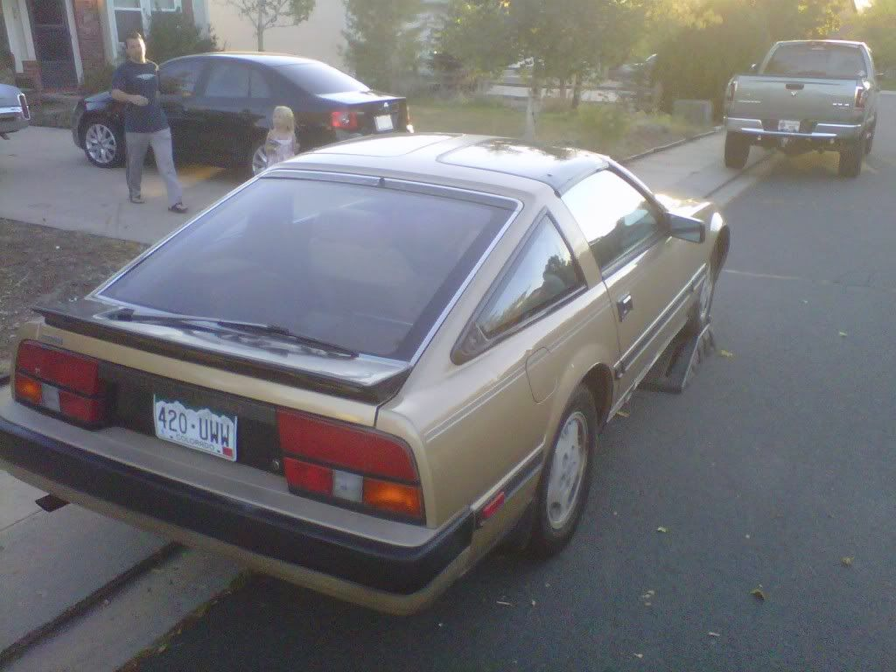
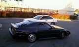

-
Hey I just ordered a 3" cm downpipe and I found a muffler shop to bend some stainless for me and forget to put a cat on. My question is I want my car to be a sleeper so whats a good muffler that wont ad any back pressure but will still keep the car relatively quiet?
I don't car if it makes a little noise on the top end but idle and normal driving i don't want cops staring at me so the quieter the better. Plus we live in apartments and I let the car warm up for 10-15 minutes before driving so quiet would help me to not get my tires slashed.85T-2NA2T Exhaust delete,mbc2-10, syn. blend oil, GL4 in the tranny, Stock steering wheel, no t tops, bikini clad girls, cross-drilled brake lines, and a " HAHAHAHA F!@KIN SUPRA" sticker on the back!
Ya! I'm pushing 214hp/245tq! Thoroughbreds to one of the rear wheels -
Magnaflow is pretty quiet at idle and just driving "normally". -
Just any magnaflow or is there a certain one that's meant to be quieter than the others.
And will i still hear the turbo no matter what.85T-2NA2T Exhaust delete,mbc2-10, syn. blend oil, GL4 in the tranny, Stock steering wheel, no t tops, bikini clad girls, cross-drilled brake lines, and a " HAHAHAHA F!@KIN SUPRA" sticker on the back!
Ya! I'm pushing 214hp/245tq! Thoroughbreds to one of the rear wheels -
There isn't a specific magnaflow muffler application for the z31. You'd have to select one of their generic mufflers.iamrobed wrote: Just any magnaflow or is there a certain one that's meant to be quieter than the others.
And will i still hear the turbo no matter what.
Go to the magnaflow site ..
I've got a magnaflow .. (NO# 14815). Quiet .. maybe not as quiet as the OEM, but not distracting or attention getting at all. Step on it .. you'll hear a growl.
edit: I found the model no# of the magnaflow I have. -
You say quieter than stock my car is basically stock except the p. o. Had the muffler cut off and welded a pipe in its place. You still cant hear the car all you hear is the 3 exhaust leaks on the crappy weld it sounds like the car has a dead miss. At a gas station I had a guy in a nova come tell me he could fix my car for 500 bucks because it was missing. I stuck my finger over the holes and said "that's a chevy guy for ya"
Anyways I cant wait till my down pipe comes I have an open appointment at the muffler shop.85T-2NA2T Exhaust delete,mbc2-10, syn. blend oil, GL4 in the tranny, Stock steering wheel, no t tops, bikini clad girls, cross-drilled brake lines, and a " HAHAHAHA F!@KIN SUPRA" sticker on the back!
Ya! I'm pushing 214hp/245tq! Thoroughbreds to one of the rear wheels -
HA … it appears that your situation is like mine was. My OEM exhaust rusted out at the intake of the muffler.
It wasn't that it was noticebly louder … it was just that the exhaust fumes were more noticeable.
It wasn't until I got underneath and looked at the inlet side of the muffler to see the huge hole .. :lol: -
I saw the one you had. I guess I was thinking of a standard 3" in 3" out muffler to put where the cat should go then just have stainless sticking straight out of the back. Thats how it is now and I've grown accustomed to it.
85T-2NA2T Exhaust delete,mbc2-10, syn. blend oil, GL4 in the tranny, Stock steering wheel, no t tops, bikini clad girls, cross-drilled brake lines, and a " HAHAHAHA F!@KIN SUPRA" sticker on the back!
Ya! I'm pushing 214hp/245tq! Thoroughbreds to one of the rear wheels -
i know what u mean the sound is just awesome u get used to it lol i have 2 1/4 piping to 2 1/2 end. it sounds so beefy ive had people ask me if i V8 swapped my Z31 lol…let me know how the 3" goes for you im still still undecided on it…nice sleeper btw!
1986 300zx Z31 VG30-ET
work in progress, i can really use some wheel spacers lol
"Speed Kills!!!, Drive a Honda Live Forever" -
talk to mrfishhat, he has like 9238409823409823 mufflers laying around as he keeps changing them out for quieter ones. so he should be able to point you in the right direction -
Summit or Dynomax Turbo mufflers are known to be pretty quiet (compared to the usual Magnaflow, Flowmaster, etc). I'm not sure which one you'd need to fit, unfortunately. Another plus is that they're usually pretty cheap. '86 300ZXT GLL
'86 300ZXT GLL
'78 Datsun 280Z BP
'11 Saab 9-3 Aero XWD -
Chris is rightish about my muffler stack, On my SS ive had 4 different setups so far; mostly to hunt for more flow(ditching the 2.5in Flowmaster) And then to hunt for a quieter setup because the cops here in California are pretty strict.
1 Flowmaster - prettty loud
2 CM - much better in every way
3 Borla - louder then CM by quite a bit
4 Dynomax super turbo - 3in center in and 3in center out, still havent run it on the car since its not really running atm but it wins the put my cell phone playing music at max volume in the inlet and cover it with your hand so you hear it out the outlet test by far. if you cup your mouth so no air escapes and yell into it, it sounds no louder then a whisper. the borla didnt really even muffler on either of those tests. I cant wait to hear it on the car.
Go with the 3in and out centered dynomax super turbo. Its massive so it might not fit in the stock location out back, since it was designed for an f250. However, it should be pretty quiet and not totally break the bank if you make the exhaust yourself. -
I was watching videos on youtube. I think cherry bomb has the best flow numbers. I sent the company an email about their quietest free flow muffler. Like i said before I will put the muffler in the stock cat location. Post a video of the dynomax.
How loud is the CM kit or did you just get their muffler?85T-2NA2T Exhaust delete,mbc2-10, syn. blend oil, GL4 in the tranny, Stock steering wheel, no t tops, bikini clad girls, cross-drilled brake lines, and a " HAHAHAHA F!@KIN SUPRA" sticker on the back!
Ya! I'm pushing 214hp/245tq! Thoroughbreds to one of the rear wheels -
You can also looking into resonators they go inline with mufflers to quiet down things a bit, also cats also help. I love the way a turbo car sounds with just turbo whine , blow off and waste gate.Own:
1986 Z31 2+0 Turbo GLL ---- spearco IC ,3" exhaust, Poly everything with solid subframe and diff mounts, HX35/40 Holset Turbo, CLSD, Nistune with 1220cc FIC injectors on E85.
1993 Jeep Cherokee 4X4
Owned:
1995 Z32 2+0 NA Black
1985 Z31 2+0 turbo Black
1986 Z31 2+0 NA Red
1988 Z31 2+2 NA Auto
1988 Z31 2+0 Turbo White ---- Stripped for all of its goodies.
1984 Z31 2+0 turbo Brown
1985 Z31 2+0 NA Black
2003 Nissan frontier D22 supercharded vg33e 4x4 -
No car inspections CO so no cat for me.
Theres plenty of open headers and straight pipes around and the cops don't mind to much but i don't want to be one of those. I like the turbo sounds just don't like the meow of our 3.0's.85T-2NA2T Exhaust delete,mbc2-10, syn. blend oil, GL4 in the tranny, Stock steering wheel, no t tops, bikini clad girls, cross-drilled brake lines, and a " HAHAHAHA F!@KIN SUPRA" sticker on the back!
Ya! I'm pushing 214hp/245tq! Thoroughbreds to one of the rear wheels -
85T-2NA2T Exhaust delete,mbc2-10, syn. blend oil, GL4 in the tranny, Stock steering wheel, no t tops, bikini clad girls, cross-drilled brake lines, and a " HAHAHAHA F!@KIN SUPRA" sticker on the back!
Ya! I'm pushing 214hp/245tq! Thoroughbreds to one of the rear wheels


Copyright © 2006–. All rights reserved. Privacy Policy